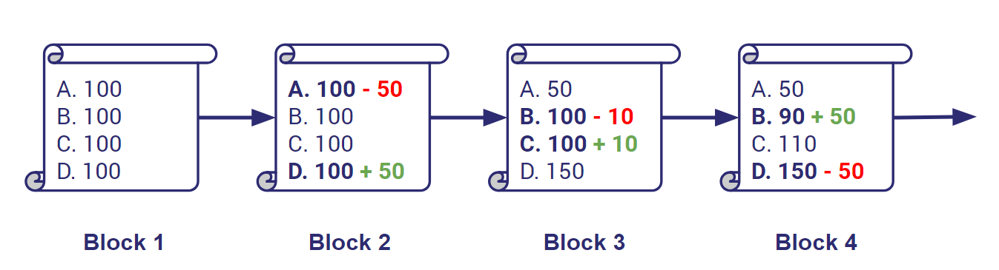

ทำไมถึงเรียกว่า Blockchain ?
Blockchain คือวิธีการเก็บข้อมูลบัญชีรูปแบบหนึ่ง นึกภาพง่าย ๆ ว่า พอมีธุรกรรม Transaction ใหม่ ๆ เข้ามา มันก็จะถูกกองรวม ๆ กันไว้ พอได้จำนวนหนึ่งเราก็จะจัดบรรจุธุรกรรมเหล่านั้นลงกล่องบัญชี (Block)และทำการปิดกล่อง พอเราปิดกล่องเสร็จ เราก็จะได้กล่องใหม่หรือ Block ใหม่ขึ้นมานั้นเอง

Blockchain กับการปฏิวัติตัวกลางครั้งใหญ่ที่สุดในประวัติศาสตร์สิ่งที่ทำให้ Blockchain ต่างจากการเก็บบัญชีแบบอื่นคือ เราไม่ได้กลับไปเปิดกล่องบัญชีเก่าเพื่อแก้หรืออัพเดทข้อมูลธุรกรรม แต่กล่องธุรกรรมใหม่จะถูกสร้างขึ้นเรื่อยๆไปในทางเดียว โดยจะเชื่อมและอ้างอิง reference กับกล่องเก่าอยู่เสมอ ในลักษณะของกล่องหลายๆกล่องที่มีโซ่เชื่อมกัน มันถึงเรียกว่า Blockchain นั้นเองยกตัวอย่างจากรูปข้างบน พอเราสร้าง Block 4 แล้ว เราไม่สามารถย้อนกลับไปแก้ข้อมูลใน Block 1 2 หรือ 3 ได้ ผลก็คือข้อมูลธุรกรรมจะถูกเก็บถาวร